MSI Analysis Application は、質量分析イメージング（Mass Spectrometry Imaging, MSI）データの UMAP解析・クラスタリング・可視化を行うためのWebアプリケーションです。 ブラウザ上で動作し、以下の機能を提供します。
| 装置 | 解析手法 | スクリプトバージョン |
|---|---|---|
| DESI-MSI | UMAP Template 解析 | v13 |
| TIMS-MSI | DBSCAN + UMAP 解析 | ver13 |
どちらの装置でも、新規解析と再解析（クラスタフィルター）に対応しています。
本アプリを使った解析は、以下のステップで進めます。
┌──────────────┐ ┌──────────────┐ ┌──────────────┐ ┌──────────────┐ ┌──────────────┐ │ 1. 環境構築 │ → │ 2. プロジェクト│ → │ 3. 解析実行 │ → │ 4. 結果閲覧 │ → │ 5. レポート │ │ Python / R │ │ 作成 │ │ UMAP / DBSCAN│ │ インタラクティブ│ │ PPTX 出力 │ │ セットアップ │ │ │ │ │ │ 解析 │ │ │ └──────────────┘ └──────────────┘ └──────────────┘ └──────────────┘ └──────────────┘
Python 3.10 以上が必要です。以下の手順でインストールしてください。
python --version
例: Python 3.12.5 と表示されれば成功です。
R は UMAP解析・クラスタリングの実行に必要です。インタラクティブ解析のみ使用する場合は不要です。
sudo apt install r-base r-base-devC:\Program Files\R\R-4.4.x を推奨しますwhich R が標準と異なる場合は、
App/app/config.py 内の R_HOME を修正してください。
Mac の Homebrew 版 R や Linux の /usr/lib/R は setup.sh が自動検出します。
アプリ一式が入ったフォルダ（UMAP-WebApp-ClaudeCode）を任意の場所にコピーします。
UMAP-WebApp-ClaudeCode/ フォルダを開きますsetup.bat をダブルクリックしますUMAP-WebApp-ClaudeCode/ へ移動します:
cd ~/path/to/UMAP-WebApp-ClaudeCode
chmod +x setup.sh run_app.sh ./setup.sh
スクリプトは壊れていません。 未署名のシェルスクリプトに対する macOS 標準のセキュリティロックです。
ダウンロードや iCloud Drive / AirDrop 経由で配置した setup.sh / run_app.sh には com.apple.quarantine 属性が付与され、ダブルクリック起動がブロックされます。
macOS Sequoia (15.x) 以降では以下のダイアログが表示されます:
"run_app.sh" は開いていません Apple は、"run_app.sh" に Mac に損害を与えたり、プライバシーを侵害する 可能性のあるマルウェアが含まれていないことを検証できませんでした。 [ゴミ箱に入れる] [完了]
（macOS Sonoma 以前は「開発元が未確認」「キャンセル / 開く」の旧ダイアログ）
いずれも初回のみ以下のいずれかで解除すれば、以降は通常どおり起動できます:
cd ~/path/to/UMAP-WebApp-ClaudeCode ./run_app.shターミナル経由の実行は Gatekeeper の対象外です。
xattr -dr com.apple.quarantine ~/path/to/UMAP-WebApp-ClaudeCodeフォルダ内の全ファイルから隔離属性を取り除きます。
setup.bat / setup.sh を実行してください。
重い生データをリポジトリ外の固定パスに置いておけば、アプリを更新（git pull や再 clone）しても
再コピー不要で 過去プロジェクトをそのまま復活できます。
App/.env.example を App/.env にコピーします.env に以下を追記します（任意・DESI / TIMS それぞれ別パスに設定可）:
DESI_DATA_DIR=C:\Users\your-name\MSI_Data\DESI TIMS_DATA_DIR=C:\Users\your-name\MSI_Data\TIMS
未設定時は従来通り同梱の Data/DESI/Data/ / Data/TIMS/Data/ を参照します。
UMAP-WebApp-ClaudeCode/ フォルダ内の run_app.bat をダブルクリックしますStarting MSI Analysis Application on http://127.0.0.1:3838 と表示されますhttp://localhost:3838
UMAP-WebApp-ClaudeCode/ に移動します./run_app.sh
http://localhost:3838 をブラウザで開きます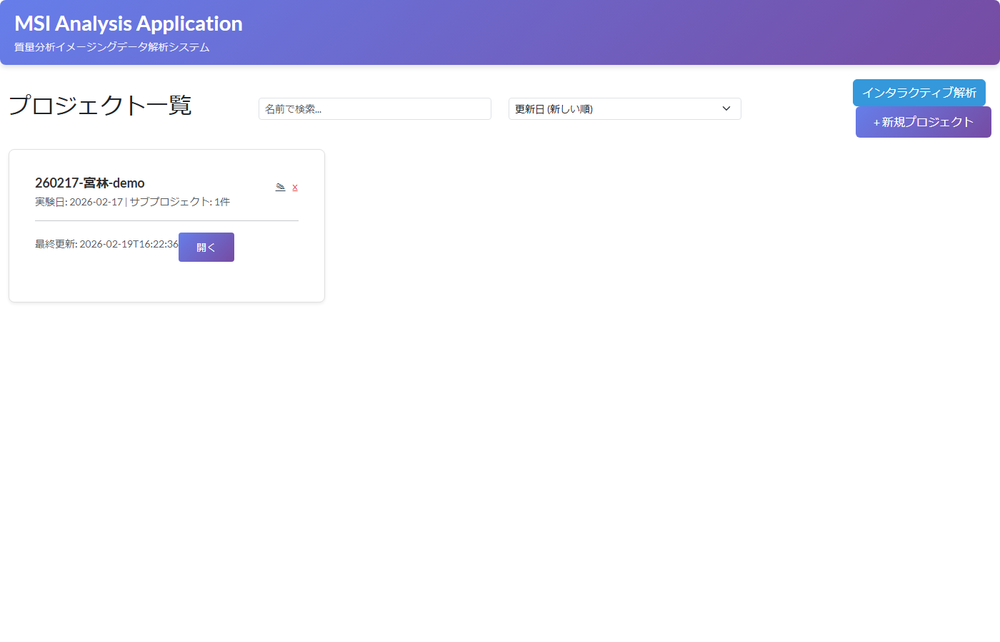
図: アプリ起動後のプロジェクト一覧画面
http://[このPCのIPアドレス]:3838 で接続できます。
外部ネットワークから共有する場合は、第10章「共有リンク」と App/docs/DEPLOY.md を参照してください。
アプリを終了するには、起動した run_app.bat または run_app.sh のターミナル/コマンドプロンプトウィンドウを閉じてください
（または Ctrl+C で停止してから閉じます）。
ブラウザのタブを閉じるだけではアプリは終了しません。
アプリを起動すると、まずプロジェクト一覧画面（ランディングページ）が表示されます。 解析データをプロジェクト単位で整理・管理できます。
240301-田中-肝臓）図: プロジェクト一覧画面。右上の「+ 新規プロジェクト」から作成できます
プロジェクトをクリックすると、サブプロジェクト一覧画面に移動します。 1つのプロジェクト内に複数のサブプロジェクト（解析条件の異なる実験など）を作成できます。
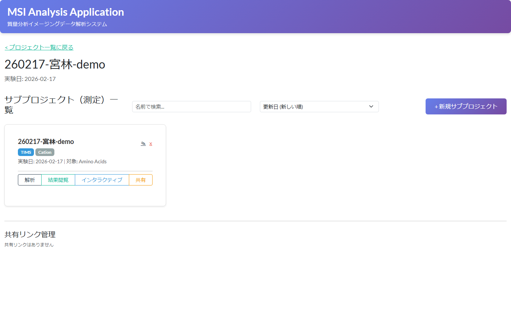
図: サブプロジェクト一覧画面。「解析」「結果閲覧」「インタラクティブ」から各機能にアクセスできます
サブプロジェクトを選択し 「解析開始」 をクリックすると、設定画面に移動します。 左側のサイドバーで解析手法を選び、各種パラメータを設定して解析を実行します。
TIMS装置で取得したデータファイル（.parquet、.csv、.txt 等）を
1つのフォルダにまとめておきます。1ファイル＝1サンプルとして認識されます。
.parquet / .pq が 1 本でもあれば、Parquet のみ がサンプル候補として表示されます
（複数 Parquet は並列解析可）。共存する .csv / .tsv / .txt は自動的に非表示になります。.csv / .tsv / .txt がすべてサンプル候補として表示されます。*_Intensity.csv、*_Spot.csv、*_Annotation.csv）は、最終の .parquet が同居していれば自動で隠れます。SCiLS Lab で Export → Feature list (CSV) した出力フォルダは、
サイドバーの 「🔄 SCiLS 変換」 ボタンから .parquet に一括変換できます。
260402_SCiLS_Annotation）を指定TIMS_DATA_DIR。必要なら変更<サンプル名>.parquet が生成されますLong 形式 (id/x/y/mz/intensity) / Wide 形式（m/z 値を列名に持つ形式）を
自動判定し、列名のエイリアス（Spot Index → id、m/z → mz、
Region → annotation 等）も吸収します。
変換後そのまま TIMS 解析のデータフォルダとして指定できます。
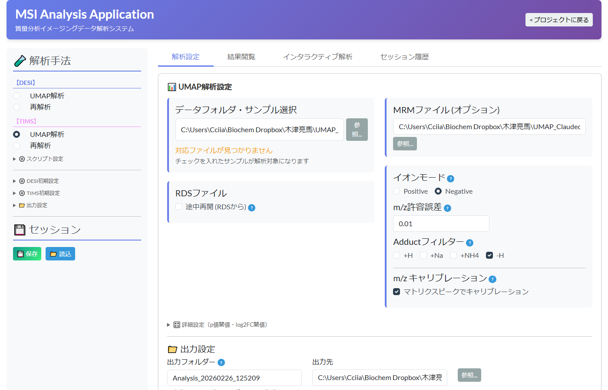
図: TIMS 解析設定画面。左のサイドバーで解析手法を選択し、右側で各種パラメータを設定します
| 設定項目 | 説明 | デフォルト値 |
|---|---|---|
| イオンモード | Positive（陽イオン）または Negative（陰イオン） | Positive |
| m/z トレランス | m/z 値のマッチング許容差（Da） | 0.01 |
| アダクトフィルタ | 対象とするアダクトイオン種 | +H, +Na, +NH4（Positive時） |
マトリックスのリファレンスピークを用いて m/z 値を補正できます。
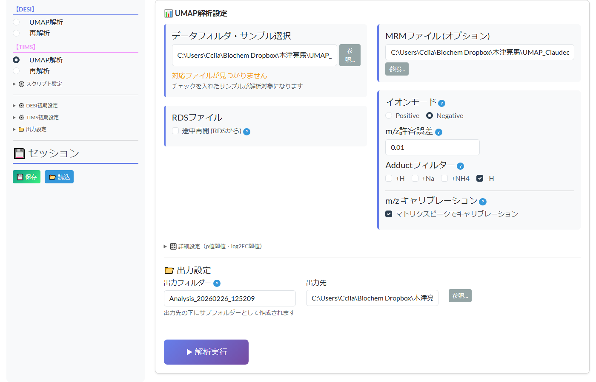
図: 設定画面下部。出力設定と「解析実行」ボタンが表示されます
| パラメータ | 説明 | デフォルト値 |
|---|---|---|
| p値閾値 | DEG（差次的発現）の有意水準 | 0.05 |
| log2FC 閾値 | 発現変動量の最小値 | 0.1 |
DESI装置で取得したテキストデータファイル（.txt）を1つのフォルダにまとめておきます。
.xlsx）を指定するとターゲット代謝物が表示されます既に実行済みの解析結果から、特定のクラスタを除外・抽出して再度 UMAP 計算を行えます。
0, 1, 5）解析実行中は以下の情報が表示されます:
解析が完了すると、生成された画像やデータを 「結果」タブ で閲覧できます。
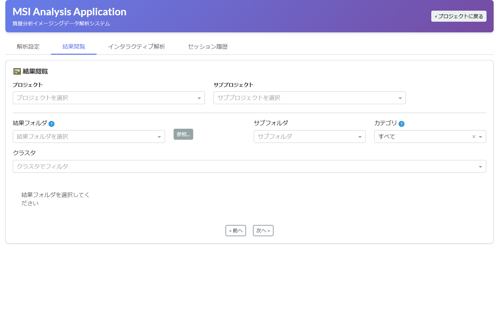
図: 結果閲覧タブ。結果フォルダを選択し、カテゴリ・クラスタでフィルタリングできます
結果画像を種類やクラスタで絞り込めます。
| フィルター | 選択肢 |
|---|---|
| カテゴリ | 全て / UMAP / Volcano / MSI / Spatial / Heatmap |
| クラスタ | 全て / 特定のクラスタ番号 |
サムネイルをクリックすると、モーダルウィンドウで拡大表示されます。
本アプリの中心機能です。解析結果をブラウザ上でリアルタイムに操作し、 クラスタの特徴や代謝物の空間分布を詳細に調べることができます。
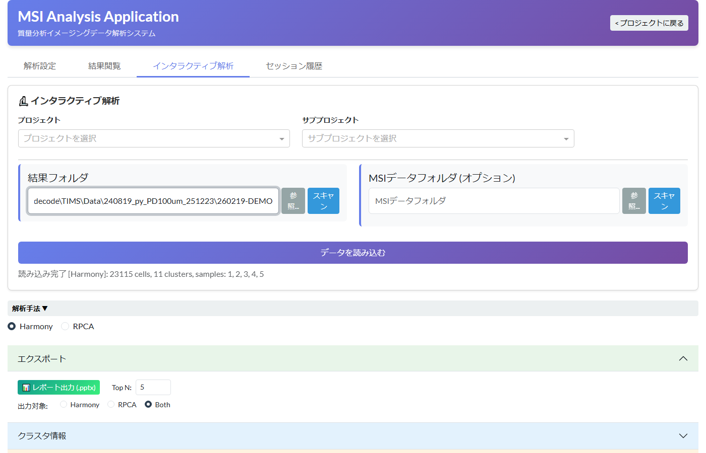
図: インタラクティブタブ。結果フォルダを指定してデータを読み込んだ状態。読み込み完了メッセージにセル数・クラスタ数・サンプル情報が表示されます
UMAP セクション（アコーディオン）を展開すると、UMAP プロットが表示されます。
| モード | 説明 |
|---|---|
| 統合表示 | 全サンプルを1つのプロットに重ねて表示します |
| サンプル別表示 | 各サンプルを個別のプロットとして横並びで表示します |
| 操作 | 説明 |
|---|---|
| ハイライト | 特定のクラスタだけを強調表示します（他のクラスタは薄く表示） |
| 除外 | 特定のクラスタを非表示にします |
| マーカーサイズ | プロット上の点の大きさを調整します（1〜10） |
| ラベルサイズ | クラスタ番号ラベルの文字サイズを調整します（6〜24pt） |
| ラベル表示 / 非表示 | クラスタ番号ラベルのオン/オフを切り替えます |
| 凡例表示 / 非表示 | カラー凡例のオン/オフを切り替えます |
| 横並び数 | サンプル別表示時の1行あたりの列数（自動 / 1〜8列） |
| ラベル位置保存 | ドラッグで移動したラベル位置を保存します（次回も同じ位置で表示） |
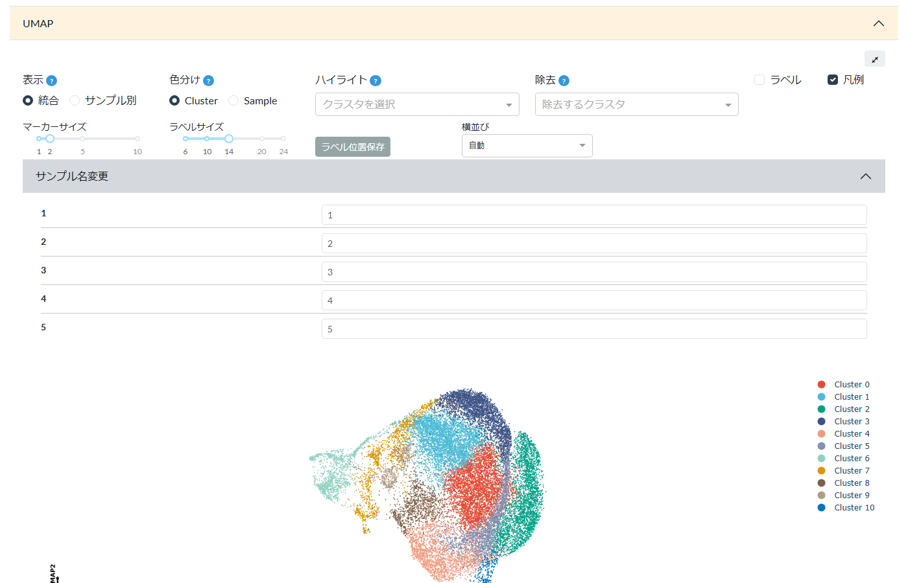
図: UMAP セクション。表示モード・色分け・ハイライト等のコントロールと UMAP 散布図
各セクション（UMAP、Spatial Mapping、Feature Plot、DEG マーカー）の右上にある 「📷 一括保存」 ボタンをクリックすると、 セクション内に表示されている 全てのプロットを PNG 画像にまとめた ZIP ファイル をダウンロードできます。
プロットの右上にあるフルスクリーンボタンをクリックすると、 画面全体を使った大きなプロットが表示されます。 フルスクリーンでも全ての操作パネルが使用可能です。
Spatial Mapping セクションを展開すると、 組織上の空間座標にクラスタ情報をマッピングした図が表示されます。
| 操作 | 説明 |
|---|---|
| サンプル選択 | 表示するサンプルを選択します（「全て」または個別サンプル） |
| ハイライト / 除外 | UMAP と同様にクラスタの強調・非表示が可能です |
| マーカーサイズ | ピクセルの描画サイズを調整します。「Auto」ボタンで自動計算もできます |
| 回転 / 反転 | 各サンプルの表示を回転・左右反転・上下反転できます |
| 横並び数 | 複数サンプルの1行あたりの列数を設定します |
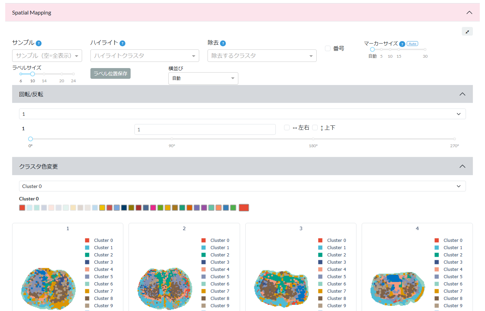
図: Spatial Mapping セクション。サンプル選択・回転/反転・クラスタ色変更と空間マッピング画像
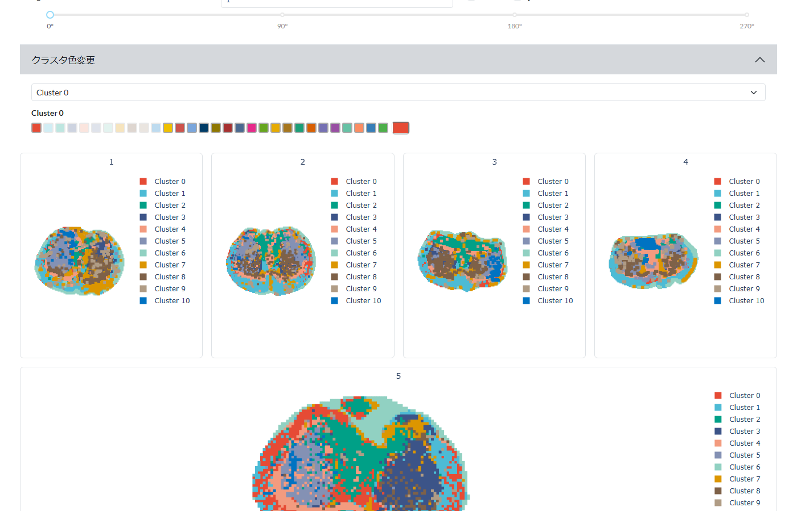
図: Spatial Mapping のサンプル別表示。各サンプルのクラスタ分布が組織上の空間座標にマッピングされます
Feature Plot セクションでは、特定の m/z（代謝物）の発現強度を 空間座標上にカラーマッピングして表示します。
| フィルター | 説明 |
|---|---|
| モード | 「全 m/z」: 全ての m/z を表示 / 「DEGマーカー」: 有意な DEG のみ表示 |
| m/z 範囲 | 最小値〜最大値で m/z 範囲を絞り込みます |
| 強度フィルター | 表示する最小/最大強度を設定します |
| サンプルフィルター | 特定のサンプルだけを表示します |
| クラスタフィルター | 特定のクラスタだけを表示します |
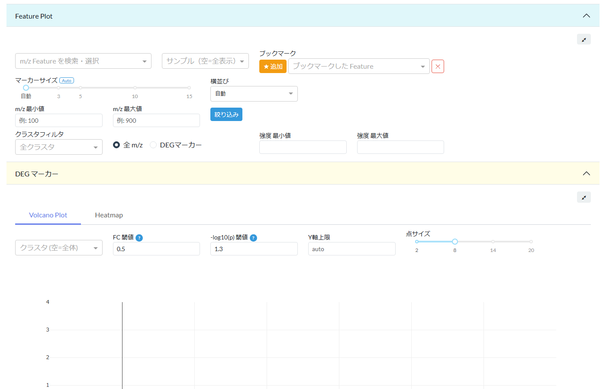
図: Feature Plot セクション。m/z の検索・ブックマーク・フィルタリング機能
DEGマーカー セクションでは、差次的発現解析の結果を Volcano Plot と Heatmap で可視化します。
横軸に log2 Fold Change、縦軸に -log10(p-value) をプロットした散布図です。
| 調整項目 | 説明 | デフォルト |
|---|---|---|
| FC 閾値 | Fold Change の閾値（縦の破線位置） | 0.5 |
| -log10(p) 閾値 | 有意水準の閾値（横の破線位置） | 1.3 |
| クラスタ選択 | 特定クラスタのマーカーだけを表示 | 全て |
| ポイントサイズ | 点の大きさ | 8 |
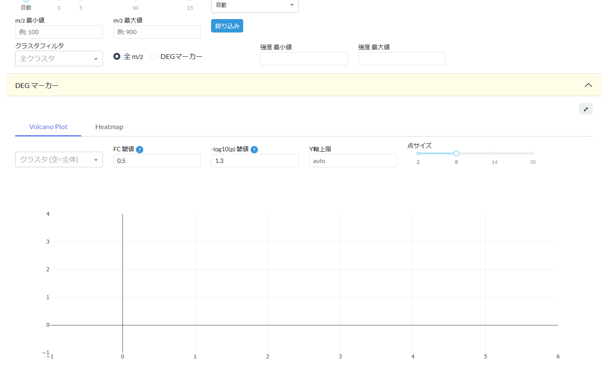
図: DEG マーカーセクション。Volcano Plot タブでは FC 閾値・p 値閾値を調整してマーカーを可視化します
クラスタ間の発現パターンを色で表現したヒートマップです。
| 設定 | 説明 | デフォルト |
|---|---|---|
| Top N | 各クラスタの上位何個のマーカーを表示するか | 5 |
| スケール | Z-score（標準化）または Raw（生値） | Z-score |
| アノテーション | 化合物名の表示/非表示 | 表示 |
クラスタ情報 セクションでは以下の機能を利用できます。
各クラスタのピクセル数と全体に占める割合が表で表示されます。
各クラスタに割り当てる色を変更できます。カラーピッカーで任意の色を選択してください。 変更は全てのプロット（UMAP、Spatial Mapping、Feature Plot）に即座に反映されます。
元のファイル名の代わりに、表示用のサンプル名を設定できます。 変更した名前はプロットのタイトルや凡例、レポート出力にも反映されます。
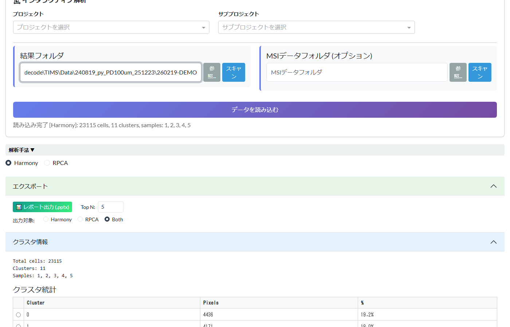
図: クラスタ情報セクション。クラスタ統計テーブル（ピクセル数・割合）が表示されます
インタラクティブ解析画面で、マトリックスのリファレンスピークを用いた m/z キャリブレーション（補正）を行えます。 解析設定タブのキャリブレーション機能と同様のロジックで、読み込み済みデータに対してリアルタイムに補正を適用できます。
| 項目 | 説明 | デフォルト |
|---|---|---|
| イオンモード | Positive / Negative の切り替え | Positive |
| 付加イオン | 対象とするアダクトイオン種 | +H, +Na, +NH4（Positive時） |
| マトリックス | リファレンスピークの元になるマトリックス種 | DHB |
| MRMファイル | MRM リスト（DESI解析の場合のみ表示） | ― |
| 検索ウィンドウ | ピーク自動検出の検索幅（Da） | 0.5 |
| 最小ピーク数 | 回帰に使用する最小ピーク数 | 2 |
| 回帰モデル | linear / poly2 / poly3 | poly3 |
複数サンプルが混在するデータでは、サンプルごとに異なる m/z オフセットが生じる場合があります。 本アプリでは、全サンプル共通のキャリブレーションに加え、 サンプル単位での個別補正にも対応しています。
| モード | 用途 |
|---|---|
| 共通設定（デフォルト） | 全サンプル同一ロットのマトリックスで測定され、共通の m/z ずれを補正する場合 |
| サンプル別設定 | サンプルごとに測定日・マトリックスロットが異なり、個別補正が必要な場合 |
Data/Other/sessions/ 以下に記録されます。
インタラクティブ解析の結果を PowerPoint（.pptx）ファイルとして出力できます。
図: エクスポートセクション。Top N と出力対象を設定し「レポート出力 (.pptx)」で PowerPoint を生成します
1つの解析手法あたり、以下のスライドが生成されます:
| スライド | 内容 |
|---|---|
| 1. タイトル | プロジェクト情報・日付・サンプル一覧 |
| 2. Heatmap | Top N DEG の Z-score ヒートマップ |
| 3. UMAP & Spatial | サンプル別の UMAP（上段）と Spatial（下段） |
| 4. UMAP (by Sample) | 全サンプルを色分けした統合 UMAP |
| 5. クラスタ統計 | 各クラスタのピクセル数・割合テーブル |
| 6〜 クラスタ詳細 | 各クラスタの DEG 解析（Volcano + Feature Plot）と UMAP/Spatial ハイライト表示。クラスタ数 × 2 スライド |
解析設定やUIの状態をセッションとして保存し、後から復元できます。
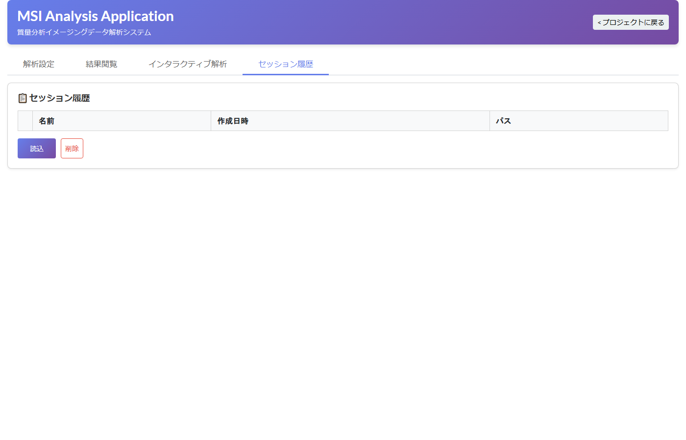
図: セッション履歴タブ。保存済みセッションの一覧が表示され、読込・削除が可能です
プロジェクトデータの自動バックアップファイルを確認できます。
Data/Other/projects/backups/ フォルダに保存されます。
Data/Other/sessions/ フォルダに保存されます。
アプリのフォルダ (App/) を別のPCにコピーしても、セッションは Data/ 側に残ります。
アプリを別マシンで再 clone したり git pull で更新した場合、projects.json に
保存された絶対パスは旧マシン由来で壊れています。本機能は、
現在の DESI_DATA_DIR / TIMS_DATA_DIR 配下を再帰スキャンし、
末尾フォルダ名が一致するデータを見つけて パスを自動補正します。
App/.env で DESI_DATA_DIR / TIMS_DATA_DIR を設定
（第2.2章「外部データフォルダの設定」参照）_project_meta.json が検出され、
破損パスが自動補正された状態で一覧表示されますprojects.json に登録されます補正に失敗したパス（同名フォルダが見つからない場合）は警告として列挙されるので、 必要に応じてファイルブラウザから手動指定してください。
Data/DESI/Data/ 等）も探索対象（legacy fallback）に含まれるため、
.env を設定していない既存ユーザでも問題なく復元できます。
よく使う解析パラメータやキャリブレーション設定を プリセット として保存し、 次回以降ワンクリックで呼び出せます。チーム内で設定を共有する場合にも便利です。
設定タブの全パラメータ（解析手法・イオンモード・許容誤差・キャリブレーション設定・ 再解析パラメータ等）をまとめて保存できます。
TIMS_標準設定、DESI_高感度）| 項目 | 内容 |
|---|---|
| 解析設定（DESI / TIMS） | 解析手法、イオンモード、許容誤差、付加イオンフィルター、p 値・logFC 閾値 |
| キャリブレーション設定 | 有効/無効、マトリックス、検索ウィンドウ、最小ピーク数、回帰モデル |
| 再解析パラメータ | フィルタモード、対象クラスタ、再解析用のイオンモード・閾値 |
Data/Other/presets/presets.json に保存されます。
このファイルをコピーすれば、別の PC でも同じプリセットを利用できます。
キャリブレーション設定（マトリックス・リファレンス m/z テーブル・回帰モデル）に特化したプリセットも管理できます。
Data/Other/presets/calibration_presets.json に保存されます。
解析パラメータプリセット（9.1）とは別ファイルで独立に管理されるため、
マトリックス補正設定のみを使い回したい場合はこちらを活用してください。
解析結果のインタラクティブビューを URL で他のユーザと共有できます。 共有先のユーザは 閲覧専用モード でアクセスでき、データの書き換えはできません。
| 項目 | 説明 |
|---|---|
| 有効期限 | 発行から何日間有効とするか（例: 7 日、30 日）。空欄で無期限 |
| 解析手法 | 共有する結果を「Harmony/PCA」または「RPCA」から選択 |
| メモ | 共有先に伝える任意メモ（例: 「3/15 ミーティング用」） |
共有 URL をブラウザで開くと、読み取り専用のインタラクティブビューが表示されます。 共有先ユーザが利用できる機能は以下のとおりです:
社外ユーザがアクセスするには、アプリサーバーへ外部からの到達経路が必要です。
LAN 内のみで使う場合は不要ですが、インターネット越しに共有する場合は
.env の SHARE_BASE_URL を公開 URL に設定してください:
SHARE_BASE_URL=https://msi.example.comデプロイ方法の詳細は App/docs/DEPLOY.md を参照してください。
Data/Other/shares/shares.json に記録されます。
期限切れのリンクは、新規リンク発行時に自動クリーンアップされます。
手動で削除する場合は、上記の「共有リンクの削除」手順を利用してください。
| 症状 | 原因 | 対処法 |
|---|---|---|
run_app.bat をダブルクリックしてもすぐ閉じる |
Python が PATH に登録されていない | Python を再インストールし「Add Python to PATH」にチェックを入れる |
macOS で run_app.sh をダブルクリックすると「Apple は…検証できませんでした」または「開発元が未確認」警告が出る |
未署名シェルスクリプトに対する macOS Gatekeeper のセキュリティロック（スクリプト自体は正常） | ターミナルから ./run_app.sh で直接実行する／システム設定 → プライバシーとセキュリティ → 「このまま開く」で許可する／xattr -dr com.apple.quarantine ~/path/to/UMAP-WebApp-ClaudeCode で隔離属性を解除する（いずれか 1 つ）。詳細は 2.2 章の warn ボックス参照 |
ブラウザで localhost:3838 に接続できない |
アプリが起動していない / ポートが競合している | コマンドプロンプト/ターミナルにエラーが出ていないか確認する。他のアプリがポート3838を使用していないか確認する |
| 解析実行ボタンを押してもエラーになる | R がインストールされていない / Rパッケージ不足 | R をインストール後、setup.bat（Windows）または ./setup.sh（macOS / Linux）を再実行する |
| RDS ファイルの読み込みが失敗する | R のバージョン不一致 / Seurat パッケージ不足 | setup.bat または ./setup.sh を再実行し、R パッケージを再インストールする |
| インタラクティブ画面が真っ白になる | データの読み込みに失敗している | ブラウザの開発者ツール（F12）でエラーを確認する。コマンドプロンプトのログも確認する |
| PPTX の出力に失敗する | kaleido パッケージの問題 | コマンドプロンプトで pip install --upgrade kaleido を実行する |
| 画像の保存ボタン（カメラアイコン）が動作しない | kaleido の不具合 | pip install kaleido==0.2.1 でバージョンを固定する |
UMAP-WebApp-ClaudeCode/ ← プロジェクトルート（配布 ZIP 解凍後）
├── manual.html ← 本マニュアル
├── SETUP_GUIDE.html ← セットアップガイド
├── images/ ← マニュアル画像
├── run_app.bat ← Windows 起動バッチ
├── run_app.sh ← macOS / Linux 起動スクリプト
├── setup.bat ← Windows 初期セットアップ
├── setup.sh ← macOS / Linux 初期セットアップ
├── App/ ← アプリ本体（差し替え対象）
│ ├── run_app.py ← Python エントリポイント
│ ├── requirements.txt ← Python 依存パッケージ
│ ├── install_r_packages.R ← R パッケージインストーラ
│ ├── .env.example ← 環境変数テンプレート
│ ├── app/ ← アプリケーションソース
│ │ ├── main.py, config.py
│ │ ├── assets/ ← CSS / JavaScript
│ │ ├── layouts/ ← 画面レイアウト定義
│ │ ├── callbacks/ ← 画面操作のロジック
│ │ └── services/ ← データ処理サービス
│ ├── Script/ ← R スクリプト
│ │ ├── DESI/ ← DESI 解析
│ │ ├── TIMS/ ← TIMS 解析
│ │ ├── Common/ ← 共通処理
│ │ └── helpers/ ← R ヘルパー
│ ├── DB/ ← アノテーション DB
│ │ ├── DESI/
│ │ └── TIMS/
│ ├── docs/ ← 開発者向け資料（DEPLOY.md 等）
│ └── tests/ ← テストコード
└── Data/ ← ユーザデータ（差し替え対象外）
├── DESI/Data/ ← DESI 入力データ
├── TIMS/Data/ ← TIMS 入力データ
└── Other/ ← アプリ内部データ
├── Common/ ← 共通領域
├── sessions/ ← セッション保存
├── projects/ ← プロジェクト（projects.json, backups/）
├── presets/ ← プリセット（presets.json, calibration_presets.json）
├── shares/ ← 共有リンク（shares.json）
├── cache/ ← キャッシュ
├── logs/ ← アプリログ
└── output/ ← 解析出力（デフォルト）
| 項目 | 最低要件 | 推奨 |
|---|---|---|
| OS | Windows 10 (64bit) / macOS 11+ / Ubuntu 20.04+ | Windows 10/11 (64bit) / macOS 13+ / Ubuntu 22.04 LTS |
| CPU | 4コア | 8コア以上 |
| メモリ | 8 GB | 16 GB 以上 |
| ストレージ | 10 GB 空き | 50 GB 以上の空き |
| Python | 3.10 | 3.12 以上 |
| R | 4.3（解析実行時のみ） | 4.4.x |
| ブラウザ | Chrome / Edge / Firefox | Google Chrome（最新版） |
MSI Analysis Application 操作マニュアル v2.5
最終更新: 2026年4月